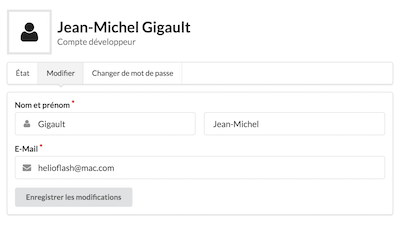

CHANGELOG / 2016-10-06
Tout accès non sécurisé à l’API ou au tableau de bord génère une erreur 403 Accès Refusé.
Vous êtes invités à mettre à jour vos favoris et les URI utilisées dans vos applications afin que vos utilisateurs ne soient pas impactés.
{
"jsonapi": {
"version": "1.0"
},
"links": {
"self": "http://..."
},
"errors": [
"forbidden_access",
"You must use HTTPS protocol",
"status_code:403"
]
}
Filtrez les résultats d’une requête en utilisant le paramètre "filter".
Cette fonctionnalité n’est actuellement disponible que sur les champs personnalisés des collections de donnée (uniquement sur les routes de type "donnees").
Référez-vous à la documentation pour plus de détails.
Exemple d’utilisation simple :
?filter[data.county]=75017
Se traduisant par : Toutes les données de la collection dont le code département est 75017.
Exemple d’utilisation avec les opérateurs de logique ET ($and) et OR ($or) :
?filter[$and][data.county]=75017&filter[$and][$or][data.street]=Bd+Bessières&filter[$and][$or][data.number]=96
Se traduisant par : Toutes les données de la collection dont le code du département est 75017 et dont l’une des deux conditions suivantes est remplie : Le nom de la rue est strictement égal à "Bd Bessières" ou le numéro de rue est strictement égal à "96" (ce qui n’a pas de sens, mais c’est pour l’exemple ;-)).
Le nombre de résultats d’une requête est maintenant limité à 25 éléments par défaut. Vous pouvez augmenter ce nombre jusqu’à 200 maximum.
Lorsque le résultat d’une requête à l’API est paginée, le code HTTP de la réponse est 506 Partial Content. Dans ce cas, des liens supplémentaires apparaissent dans le champs "links" de la réponse.
Référez-vous à la documentation pour plus de détails.
Attention : Cette fonctionnalité ne concerne pas les relations entre les collections de données. En effet elles ne sont pas encore implémentées.
Incluez dans les réponses de l’API les ressources ayant une relation avec le type de ressource requêté grâce au paramètre "include".
Référez-vous à la documentation pour plus de détails.
Accédez plus facilement aux ressources grâce aux nouvelles routes simplifiées :
OLD: /api/v1/services/ID_SERVICE/relationships/collections NEW: /api/v1/collections
Info : Cette route permet d'obtenir la liste de toutes les collections publiques de la Plate-forme (ainsi que les collections privées rattachées au service réalisant la requête), et non plus seulement celles associées à un service en particulier.
OLD: /api/v1/services/ID_SERVICE/relationships/collections/ID_COLLECTION NEW: /api/v1/collections/ID_COLLECTION
OLD: /api/v1/services/ID_SERVICE/relationships/collections/ID_COLLECTION/relationships/champs NEW: /api/v1/collections/ID_COLLECTION/relationships/champs
OLD: /api/v1/services/ID_SERVICE/relationships/collections/ID_COLLECTION/relationships/donnees NEW: /api/v1/collections/ID_COLLECTION/relationships/donnees
OLD: /api/v1/services/ID_SERVICE/relationships/collections/ID_COLLECTION/relationships/champs NEW: /api/v1/champs
Info : Cette route permet d'obtenir la liste de tous les champs rattachés au service réalisant la requête.
OLD: /api/v1/services/ID_SERVICE/relationships/collections/ID_COLLECTION/relationships/champs/ID_CHAMP NEW: /api/v1/champs/ID_CHAMP
Le nouveau tableau de bord vous permet de modifier vos informations personnelles (nom, prénom, adresse E-Mail et mot de passe). Accédez-y en cliquant sur votre nom en haut à droite du tableau de bord.
En cas de changement d’adresse E-Mail, vous devrez la valider en suivant les instructions reçues par courriel, sinon vous ne pourrez plus vous connecter ;-)

Réinitialisez votre mot de passe via la page de connexion en cas d’oubli du mot de passe, à condition que vous vous rappeliez de votre adresse E-Mail ;-)
Cette nouveauté concerne uniquement la plate-forme de production API-CPA :
Une Plate-forme de démo a été mise en place à l’adresse suivante :
https://api-cpa-staging.herokuapp.com
Testez-y en avant-première les nouvelles fonctionnalités en cours de développement et faites-nous part de vos remarques.